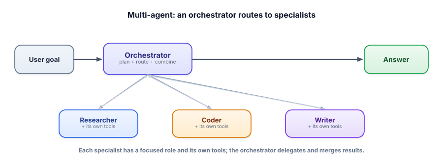

Multi-agent & orchestration
When one agent juggling a dozen tools and roles starts getting confused, the fix is often to split the work: focused specialist agents, coordinated by an orchestrator. Done right it’s cleaner and more reliable. Done reflexively it’s needless complexity — so we’ll be honest about when to reach for it.
Why split one agent into several
A single agent with 20 tools and instructions to be a researcher, coder, and editor all at once tends to make worse decisions — too many options, blurred focus, a bloated prompt. Splitting into specialist agents, each with a narrow role and just the tools it needs, mirrors how human teams work: a focused expert outperforms a generalist spread thin. An orchestrator then decides who does what and combines the results. The wins are modularity (build and test each agent separately), clarity (each prompt is simple), and reliability (a narrow agent makes fewer mistakes).

A multi-agent system uses several LLM agents that collaborate. An orchestrator (or supervisor) coordinates them — deciding which agent handles what and combining outputs. A specialist is an agent with a narrow role and toolset. A handoff is passing control (and context) from one agent to another. The coordination shape is the orchestration pattern.
The orchestration patterns
| Pattern | Shape | Use when |
|---|---|---|
| Router | Classify the request, send it to one specialist | Distinct request types (billing vs. technical) |
| Sequential pipeline | Agent A’s output feeds agent B feeds C | A clear assembly line (draft → edit → fact-check) |
| Supervisor / hierarchical | A manager agent delegates to and reviews workers | Open tasks needing planning + delegation |
| Parallel | Several agents work at once, results merged | Independent sub-tasks (research 3 competitors) |
A router in action
The simplest, most useful pattern: classify the request, hand it to the right specialist. Type something and watch it route.
Router
(Routing here is a simple keyword classifier; a real router uses the LLM to classify. Same shape.)
An LLM classifies the request, then a focused specialist (its own system prompt + tools) handles it.
import json, ollama
SPECIALISTS = {
"billing": "You are a billing specialist. Be precise about charges and refunds.",
"technical": "You are a technical support engineer. Diagnose and give clear steps.",
"sales": "You are a sales rep. Be helpful about plans and upgrades.",
}
def route(request):
prompt = f'Classify into one of [billing, technical, sales]. Return JSON {{"team":"..."}}.\nRequest: {request}'
out = ollama.chat(model="llama3.2",
messages=[{"role":"user","content":prompt}], format="json")["message"]["content"]
return json.loads(out)["team"]
def handle(request):
team = route(request) # orchestrator picks the specialist
return ask(request, system=SPECIALISTS[team]) # that specialist answers
print(handle("I was charged twice this month")) # routed to billingEach specialist prompt stays simple and testable. Adding a new team is one entry in the dictionary — that modularity is the practical payoff of multi-agent design.
Multi-agent systems are fashionable and often over-used. Every extra agent adds coordination overhead, more places to fail, more cost, and harder debugging. Start with one well-tooled agent. Reach for multiple agents only when roles are genuinely separable and a single agent is measurably struggling — not because diagrams with many boxes look impressive.
- Specialist agents with narrow roles + an orchestrator beat one agent doing everything — when roles are separable.
- Common patterns: router, sequential pipeline, supervisor/hierarchical, parallel.
- Benefits: modularity, simpler prompts, reliability, parallelism.
- Costs: coordination overhead, more failure points, harder debugging, higher cost.
- Single-agent first — add agents only when the task genuinely needs it.
You’re tempted to build five collaborating agents for a task a single agent with three tools already handles well in testing. What’s the right call?
1. Pick an orchestration pattern for each: (a) support inbox triaged to billing/tech/sales, (b) blog post drafted then edited then fact-checked, (c) research 4 competitors simultaneously.
2. Name two concrete costs a multi-agent system adds over a single agent.
3. When a sequential pipeline’s final output is wrong, how do you find which agent caused it?
▸ Show solutions & reasoning
1. (a) router — classify and send to one team; (b) sequential pipeline — draft → edit → fact-check, each stage’s output feeding the next; (c) parallel — four independent research agents run at once, results merged. Match the pattern to the task’s shape (one-of, assembly-line, or independent-fan-out).
2. (a) Coordination/communication overhead — agents must pass context cleanly, and handoffs lose or distort information; (b) more cost and latency — each agent is its own LLM call(s), so five agents can mean many times the tokens and time. (Also: harder debugging and more failure points.)
3. Inspect the intermediate outputs at each handoff — the same “read the trace” discipline as single agents, applied per stage. Because a pipeline is modular, you can check each agent’s input and output in isolation: if the editor received a good draft but produced a bad one, the editor is at fault. Logging every inter-agent message is what makes multi-agent systems debuggable; without it, you’re blind.
The hidden cost of multi-agent systems is communication. When agent A hands off to agent B, everything B needs must be packed into that message — and natural-language handoffs are lossy. Subtle context (a constraint mentioned early, a tentative decision) gets dropped, and errors compound down a chain: a small misunderstanding at stage one becomes a wrong deliverable at stage four. This is why naive “just add more agents” designs often perform worse than a single capable agent — the coordination tax exceeds the specialization benefit.
Techniques that help: a shared state/“blackboard” all agents can read and write (so context isn’t re-transmitted and distorted), structured handoffs (pass typed data, not just prose), and an orchestrator that validates each result before passing it on.
The strategic read for the current year: the industry has cooled on sprawling multi-agent architectures and warmed to “one strong agent with great tools, memory, and guards, plus a few specialists only where roles are truly distinct.” The reasons are exactly the above — coordination overhead and lost context. So treat multi-agent as a targeted technique: use a router when request types are clearly different, a pipeline when there’s a real assembly line, parallelism for independent work — and resist the urge to model your org chart in agents. The best multi-agent system is usually the smallest one that the task genuinely requires.
Whether one agent or many, autonomy without guardrails is dangerous. The final engineering lesson of this track is how to keep agents safe, bounded, and trustworthy. Next: failure modes & guards.